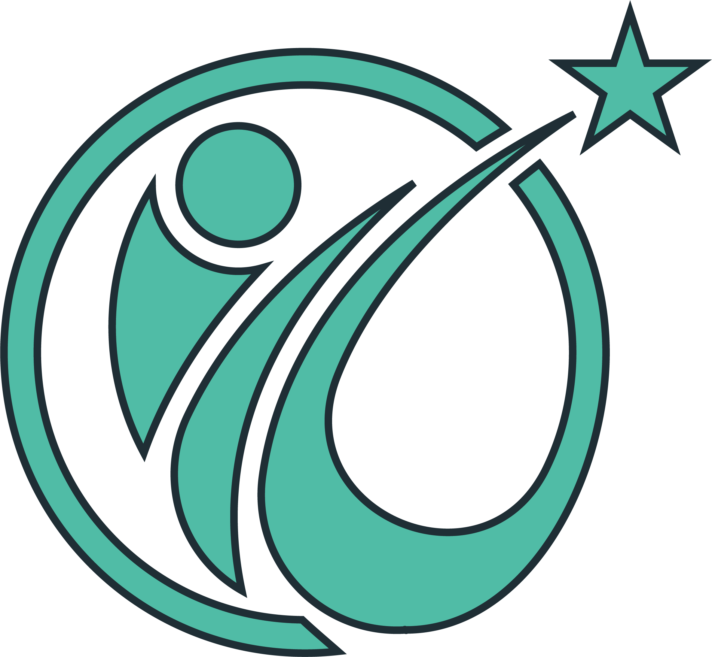

60歳以上
役員を除き、自社の労災保険適用の60歳以上の労働者が常時1名以上就労していること

プライズネス健康経営サポート補助金について
高年齢労働者 転倒予防 札幌、エイジフレンドリー補助金 北海道での活用を検討する企業向けに、職場の現状確認から取り組みを整理します。
制度概要
高年齢労働者の転倒・腰痛・身体的負担の予防に取り組む中小企業では、令和8年度エイジフレンドリー補助金を活用できる可能性があります。
令和8年度版では、60歳以上の高年齢労働者が安全に働くことができる環境整備を目的として、専門家によるリスクアセスメント、職場環境改善、転倒防止・腰痛予防のための身体機能チェックや運動指導等の取組が示されています。
プライズネス健康経営サポートでは、理学療法士の視点で、職場の作業動作・身体機能・職場環境を確認し、腰痛・転倒・労働災害予防に向けた取り組みの整理をサポートします。
補助金の対象可否は、事業内容・対象経費・申請内容・審査結果により異なります。補助金の交付を保証するものではありませんので、申請をご検討の場合は最新の公募要領・Q&Aをご確認ください。
役員を除き、自社の労災保険適用の60歳以上の労働者が常時1名以上就労していること
1年以上事業を実施している中小企業事業者が対象とされています。
身体機能チェックや運動指導等は、補助率1/2、上限額100万円の対象となる可能性があります。
専門家によるリスクアセスメント、職場環境改善、運動指導などの取組整理を支援します。
公式資料
補助金の対象可否、申請要件、対象経費、申請期間、必要書類などは、年度ごとの公式リーフレット・Q&Aでご確認ください。プライズネスでは、職場の腰痛・転倒予防に向けた取り組み内容の整理をサポートします。
※本ページは制度の概要を紹介するものであり、補助金の採択・交付を保証するものではありません。
※補助金の対象可否、申請要件、対象経費は年度・事業内容・審査結果により異なります。
※申請前に、必ず公式の公募要領・Q&Aをご確認ください。